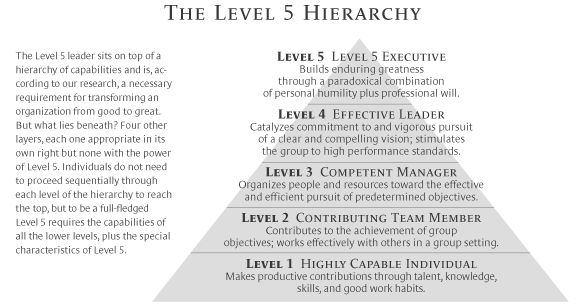
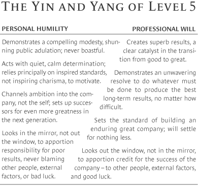

PS: 这篇文章基本上所有的核心思想都是由HBR的这篇文章和Berkeley Changemaker课得来的, 感兴趣的可以点击链接了解更多.
在我开始叙述我学了什么之前, 大家可以先看一下领导力的分级:

那么大家可以看到, 领导力分成了5层, 我个人觉得自己正在慢慢的从Level1-2之间上升到Level3. 领导力确实是一个长期锻炼的过程, 而且需要有合适的时机和团队配合才可以真正有效的锻炼自己的领导力. HBR的这篇文章说了一个没什么意思的案例, 但是真正让我觉得有帮助的是下面这张图:

要做一个有能力把一个好的公司变成有个伟大的公司的领导者, 需要掌握这个图里面的所有特质. 这些特质里面包括了能够调节队员之间关系, 统一公司所有成员的目标, 用被广泛接受的理论和规则来领导而不是个人魅力等等. 在领导一个公司的过程中领导者身兼管理者和决策者两个角色, 并不是一个容易的工作. 这里就不cue国内的公司了, 我觉得996和不996对公司来说各有各的优点吧, 总的来说还是国内太能卷了, 部分岗位竞争激烈.
Anyways, 昨天总算把我文学课的Midterm搞完啦, 今天有空写了一点InteractivePDK 2021, 非常充实.